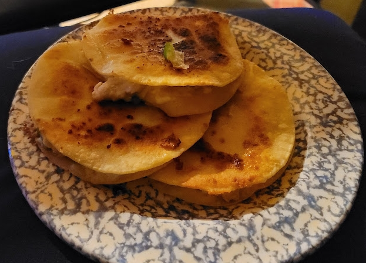

Quesadillas

Description
Do you love spicy and crunchy food? If so, you'll love this quesadilla recipe!
This recipe uses simple ingredients simmered over a hot frying pan to create a spicy and delicious meal!
Ingredients
- Corn tortillas
- Monterey Jack cheese
- Packaged chicken breasts
- Fresh jalepenos
- Coconut or olive oil
- Any other peppers, vegetables, or extra toppings that you prefer like guacamole or salsa
Instructions
- Grate cheese onto a plate and store in the fridge
- Cut up the jalapenos and any other peppers or vegetables you'd like
- Cut up the chicken into small pieces
- Fry the chicken in a frying pan on the stove in the coconut or olive oil
- Assemble each quesadilla with chicken, cheese, jalepenos, and any other vegetables and peppers inside two corn tortillas
- Cook the quesadillas in a frying pan in a light layer of coconut or olive oil, until the tortilla is crispy
- Use a spatula to flip the quesadilla and cook the other side the same way
- Enjoy!